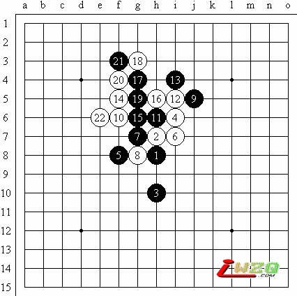

五子棋研究是技术活，还是体力活
#1 五子棋研究是技术活，还是体力活作者：有志青年 发表时间：2007-4-25 8:15:34

五子棋研究到底是技术活，还是体力活。各种各样的言论其实都有，比如有的说，学棋要从基础打起，基础打好了，那么以后就熟能生巧。有的说，某某变化某某人很有研究，对局中俺一定要避开这个变化。按照前一种理论，掌握的了一定的技巧，那么五子棋就可以顺理成章的下好了。按照后一种理论，无论我是不是要去掌握什么技巧，只要在这个特定的布局下多搞几下，那么人家就会心有余悸。比如对局中明明可以开成明星的优势布局，偏要开瑞星的平衡布局等等。
五子棋研究如果是技术活，为什么会有一些人在部分的终结五子棋。五子棋研究如果是体力活，那么为什么有些人研究个半天，瞬间就被人破掉了。五子棋研究从来都是在相对陌生的环境中进行的，那时就是检验五子棋以往的经验和理论的最佳时机。如果说实践是检验真理的唯一标准，那么五子棋研究称的上是反映了五子棋技术的全貌。这里的最佳选择是地毯，是毛巾，还是手帕。各自的能够解决多少问题。换句话说其信度和效度又如何呢？
不少人以为人和机器走出来的棋谱是有区别的。以为人的棋谱可以天马行空，充满了创造性的光芒。而机器只会因循守旧，墨守成规。一旦被打败，就会输的再也爬不起来。但那只是程序设计者的1。0测试版本。稍微懂一点程序的人都知道可以在程序里面用一个随机的办法把几步可行的走法随机挑选出来，供人选择，这样就不仅仅一个标准答案了。在这样的基础上，你只能看到有某种风格的机器人了。要区分的前提是，你是否能凭着几着就发觉出这个下棋是怎么样的一个人呢？是否每个人都有不同的风格呢？做地毯是不是只是机器的专利，还是人类缺乏周密思考的习惯。
不少人下棋都不同程度copy其他人的棋谱。这时候搬来的是对方的思想还是对方的步骤。还是你早就认定两者不可区分，所以也不加区分了。按着这样思路到了五子棋研究当中也会分成截然不同 的几派，有迟早认为会终结的乐观派，也有不到最后一个成五，死不承认的严肃派。有认为糊里糊涂，左右摇摆的懦夫，也有先知先见，自以为是的狂人。
中国人历来的传统喜欢中庸之道而是不太重视技术的，而且也鄙视体力劳动者。所以什么东西都可以来，但来了也不太容易长久。五子棋的研究里面似乎也有这样的倾向。要技术，但技术性强，费脑子的事情咱不干。要棋谱，但终结程度过高的东西看着又太累，不招人喜欢。
2006年所看到的中国五子棋研究水平是世界一流的。比如上图就最先流行于论坛而不见于大赛。在光环背后东西是体力还是技术。五子棋主要靠动脑还是主要靠动手呢？靠经验的积累还是靠棋谱的叠加呢？2007年最新的技术到底是啥样子，我们拭目以待。
#2 Re:五子棋研究是技术活，还是体力活作者：gerbo 发表时间：2007-4-25 22:18:17
 哦,上面那图什么意思捏?.\~~
哦,上面那图什么意思捏?.\~~#3 Re:五子棋研究是技术活，还是体力活作者：longfx 发表时间：2007-4-26 8:23:31
瑞星三打的经典变化，由sosei研究得出。#4 Re:五子棋研究是技术活，还是体力活作者：gerbo 发表时间：2007-4-26 9:39:06
少少哥，白２２手后是不是白必胜？麻烦你在ＱＱ里给我发几个图吧～